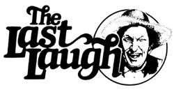

It's not so much that all the fools aren't dead. The discouraging thing is that lots of them aren't even born yet.
"We can lick gravity . . . but sometimes the paperwork is overwhelming. "
Wernher van Braun
"I remember the old Vermont farmer who was asked if he believed in infant baptism. `Believe in it.hell,' he replied. 'I've seen it with any own eyes. ' "
U. S. Attorney General Griffin Bell
Remember that the night has a thousand eyes . . . but then, so does a 600-pound potato.
They's a certain kind of strange reader out there in MOTHER land (perhaps you're one of 'em) that always likes to have at The Last Laugh in every issue of this magazine. Well, sir . . . that's why we put the feature inta each new MOTHER. Sick-joke comedians and situation comedies on TV is all right, I reckon Offen you can stomach 'em) . . . but for real humor, you jest can't beat the natural antics and time-tested stories that you'll still find makin' the rounds in places like the Plumtree Crossin' General Store (where, as you know, this column usually makes its home).
But this ain't the only place you can still see that kind of laughter and merrymaking reproduced in print. No sir. I can think of two other rich sources of the same kind of drollery without even thinkin'
First off, there's Cap'n Pere Sane . . . who holds forth monthly on the editorial page of National Fisherman (21 Elm Street, Camden, Maine 04843 . . . $8.00 a year . . . and worth more even if you ain't in the commercial fishin' trade). It seems that of Pere lives somewhere called "Saturday Cove, Maine" jest down the wharf from a motley lot of characters with names like Bubba Beal, Shorty Gage, Slats Farnum, Pud Hall, Sam Wheeler, and Beulah Banning. And the column Cap'n Sane wrote last July 'bout the annual Saturday Cove summer picnic probably gives you as much insight into the crew's way of thinkin' and doin' as you'll care to handle at one time.
Pere starts right off braggin' about the event's turnout: "We had four boat loads goin' over t'Flat Island n'three comin' back. That's a little better than most years, 'specially the comin' back loads."
Beulah Banning was there, a'course . . . along with her cousin Thurzie (who had married a French Canadian and who was invited along just to add a little decorum to the whole affair). "Thurzie n'Beul made up a washtub of potato salad with French dressin'," the good cap'n solemnly reported. "They also strung up a sack of French Fries n'French vanilla cookies. N'Thurzie brought along her French poodle . . . which took care of all the French class we could handle."
Pere further noted that the Dodge girls fetched along 12 Mason jars fulla beet wine, Sam Wheeler (who must be kinda tight with a dollar) "surprised everybody n'brung salt n'pepper", and that Slats Farnum "brung three slabs of dry salt cod which went pretty damn good with the Dodges' beet wine".
There was a little delay gettin' the party together, it seems, but Shorty Gage and Slats Farnum filled in the time by killin' two six-packs. Which probably wasn't the best idea in the world since they led the flotilla out to the Cove's picnic site later "so's we landed on the weather end of the island rather than the lee side". And once ashore ("twenty damn trips in Short's leaky peapod" ), the Dodge girls "went rose hippin' with gunny sacks while all others pitched in with the firewood gatherin'. Thurzie's poodle went yippin' off down the shore n'damned near got his ears taken off by a fish hawk".
After that, someone went about lightin' up a good blaze and all hands pitched in to put clams, ear corn, and other edibles t'steamin' in seaweed. And then it was time for the games. "The underwater walk was canceled," Cap'n Sane wrote, " 'cause of last year's near tragedy when Shorty ran outa' air n'his rock ballast got hung up in his belt. Slats grappled him off bottom just about in time."
The crew did have a hot rock juggle, though. "We just toss 'round a hot rock outa' the fire n'the first one who drops it is a skunk. Shorty was double skunked . . . not 'cause the rock was so hot, he just couldn't see."
Pere also noted that "Pud Hall won the flat rock skippin' with 34 rings. Slats wanted t'skip Thurzie's poodle but couldn't catch him. He run off down the other side of the island from the fish hawk n'found one of the Dodge girls' jars of beet wine." Accordin' to the Cap'n, the dog "came back in 'bout an hour, the drunkest poodle you ever saw . . . n'the rest of the afternoon, him n'Shorty were inseparable, drinkin' n'carrin' on."
The festive afternoon, it appears, was more or less closed out eventually by the singin' of hymns ("led by Thurzie n'her drunken poodle"). Cap'n Sane seems to think it was noteworthy that "we didn't hear any shots fired from the mainland" during the caterwaul.
"We all mustered up Vroll call just as the moon was rising," Pere reports. "On the fourth call we had two-thirds present n'called it close enough." No further mention is made of the missing members of the Cove's picnic party . . . but as the rest of the group disembarked back on the mainland and "trooped up the Cove road t'home" all the hands who were still accounted for started singin' The Battle Hymn of the Republic. And everyone joined in, "even Shorty, who was bringin' up the rear carryin' Thu rzie's passed-out French poodle under one arm".
At that, though, the outin' seemed to go off a lot quieter than it could have. Because, accordin' to Pere's June report in National Fisherman, it had only been a few days before, that Beulah (who happens to be the Cove's harbor master) had stood up at a meetin' and declared to one and all that Shorty Gage was a direct menace to the Cove's navigation. She then proceeded to read off a list of his watery indiscretions . . . endin' with the fact that his fish house had come "in and out with the tide f'two years until Sam Wheeler blew it up with 10 sticks of dynamite".
Whereupon Short got the crowd's attention by observin' that "anyone who wore size 13 sneakers, sideways, shouldn't be preaching on virtues". Which jest naturally inspired Beul to "let fly a lobster buoy which hit Pud Hall who was rollin' a Bull Durham n'want [wasn't) lookin' ".
The point bein' that the Saturday Cove crowd-jest like the liars who hang around the Plumtree Crossin' General Store -are an entertainin' bunch . . . no matter which month it is that you happen to be readin' about them. And I'll tell you about that other source of printed downhome tomfoolery in MOTHER's next issue.
It's what we value-not what we have-that makes us rich.
Dr. J. Harold Smith
There are many paths to the top of the mountain, but the view is always the same.
Chinese Proverb
Repay evil with good and you deprive the evildoer of all the pleasures of his wickedness.
Leo Tolstoy
Every step forward is made at the cost of mental and physical pain to someone.
Friedrich Nietzsche·
Only a mediocre person is always at his best.
W. Somerset Ma ugham
|
 |
|
|